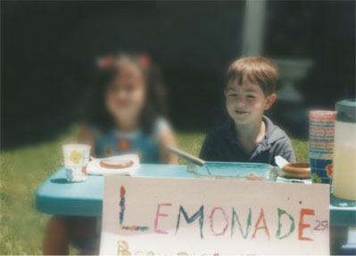

I'm Nicholas Quinlan or Nick for short. I live in Berkeley, CA and work at SendGrid as a Developer Evangelist.
I've been using (or more like been glued to) computers since the age of three, just ask my parents. At age five, I think that I might have had one of the most well planned and marketed lemonade stands a five year old has ever had.
From the day of my first lemonade stand my interest in business started. Even though when asked what I was going to be, I would say "a policeman," "a computer guy," or "Batman" the one unchangeable theme was "When I Own A Business". Now I know that there is a word for that: entrepreneur.
By age eleven I created my first 'business', Nicholas Quinlan Computer Consulting. At age thirteen I helped my computer instructor teach Adams State College Students, who in elementary and middle school had actually been my teachers! At age fifteen I became seriously interested in photography. By seventeen I had designed my fair share of websites and before I was even 18 I had started my first trade named company: Vyactiva Photographic.